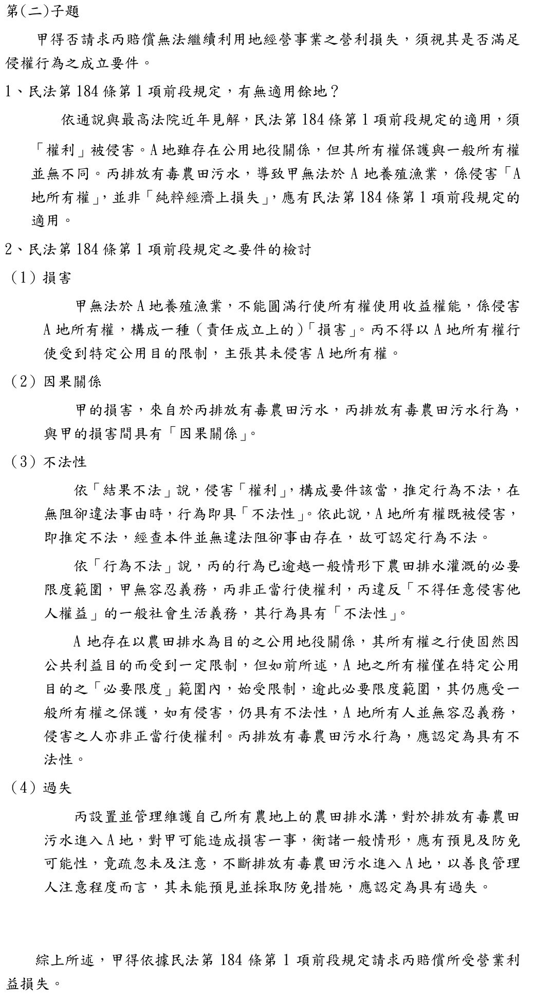
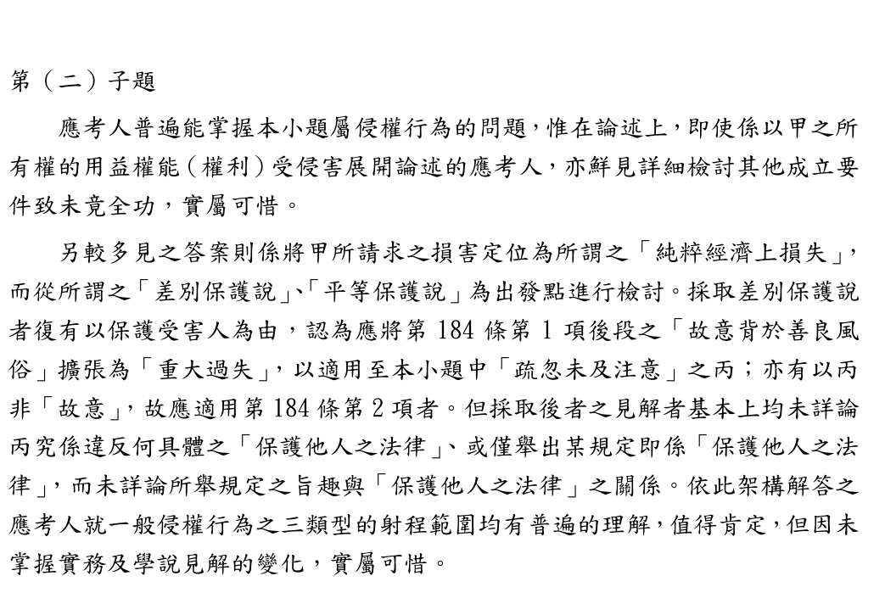

有毒農田水毀了魚池，營業損失能請求嗎？
112年律師第二試｜民法與民事訴訟法（一）｜第一題第（二）小題（30分）
題目
這一題有三個小題。本頁只做第（二）小題，用得到的事實畫黃色底線。
- （一）甲請求乙停止排放工業廢水進入A地，有無理由？（30分）（本題講義）
- （二）甲請求丙賠償其無法繼續以A地經營養殖漁業的營業利益損失，有無理由？（30分）本頁只做這一題
- （三）設乙事後為預防紛爭，主動支出費用改善工廠排水設施，避免工業廢水繼續排放流入A地。乙請求甲償還其因此支出的費用，有無理由？（15分）
影片說明
影片依序示範：主播介紹、整題讀一遍並逐句畫出事實、池塘被污染、學弟學姊說明三步順序、兩枚硬幣（純粹經濟上損失與所有權侵害）、四個要件、閘門（水質要合格）、賠償範圍的直式減法、三個易錯點，最後把擬答從頭看一遍。
關係圖：同一塊池塘，這次是丙
丙排的也是「農田」水，看起來在公用目的裡；問題出在「有毒」，超出了必要限度。
先分清楚：被侵害的是什麼？賠的是什麼？
| 層次 | 在問什麼 | 本題 |
|---|---|---|
| 被侵害的權利 | 第184條第1項前段要求「權利」受侵害 | A地所有權，具體是使用收益權能（第765條） |
| 責任成立上之損害 | 丙要不要負責：甲有沒有受害 | 不能圓滿使用收益（不能再養殖） |
| 責任範圍 | 要負責的話，賠多少 | 做不成生意少賺的淨收益，屬第216條第2項的所失利益 |
答題順序：三步
閱卷委員說，多數考生知道是侵權行為，但把損害當成純粹經濟上損失；抓到所有權的人，也很少把其他要件寫完整。
本題用到的條文
民法第184條：一般侵權行為（三種類型）
因故意或過失，不法侵害他人之權利者，負損害賠償責任。故意以背於善良風俗之方法，加損害於他人者亦同。
違反保護他人之法律，致生損害於他人者，負賠償責任。但能證明其行為無過失者，不在此限。
| 類型 | 保護什麼 | 主觀要件 |
|---|---|---|
| 第1項前段（本題） | 權利 | 故意或過失 |
| 第1項後段 | 利益（含純粹經濟上損失） | 故意，且背於善良風俗 |
| 第2項 | 保護他人之法律所保護的利益 | 推定過失；要指出違反哪一條保護他人之法律 |
本題丙是「疏忽」，不是故意，後段用不上；也沒有可指明的保護他人之法律。好在甲受侵害的是所有權，直接用前段。
民法第765條：所有權的權能
所有人，於法令限制之範圍內，得自由使用、收益、處分其所有物，並排除他人之干涉。
本題A地雖有公用地役，只在農田排水的必要範圍內受限；拿池塘養殖是甲的使用收益權能。
民法第216條：所受損害與所失利益
損害賠償，除法律另有規定或契約另有訂定外，應以填補債權人所受損害及所失利益為限。
依通常情形，或依已定之計劃、設備或其他特別情事，可得預期之利益，視為所失利益。
本題甲多年在A地經營養殖，可預期的淨收益是所失利益。
以上條文均依全國法規資料庫現行條文核對（2026-11-18）。
第②步：四要件，先看要件、再套本案
| 要件 | 本案事實與理由 | 結果 |
|---|---|---|
| 權利受侵害與損害 | 有毒污水致甲不能圓滿使用收益A地，構成責任成立上之損害。丙不能以A地受公用目的限制，主張未侵害所有權。 | ✓ |
| 因果關係 | 甲無法養殖係有毒污水排入所致；依通常情形，有毒污水足使池塘不適養殖（相當因果關係）。 | ✓ |
| 不法性 | 結果不法說：侵害權利推定不法，無阻卻違法事由。行為不法說：丙排有毒污水，逾越通常農田排水之必要範圍，違反注意義務。兩說結論都是不法。 | ✓ |
| 過失 | 丙設置並管理排水溝，對污水致生損害應有預見及防免可能，竟疏忽未注意，未盡善良管理人之注意。 | ✓ |
答題地圖
考選部評分要點與閱卷委員的話
| 評分要點 | 內容 |
|---|---|
| 1. 前段有無適用 | 依通說與最高法院近年見解，前段須「權利」被侵害；A地雖有公用地役，所有權保護與一般所有權無異；丙排有毒污水致甲無法養殖，係侵害A地所有權，非純粹經濟上損失。 |
| 2. 損害 | 不能圓滿行使所有權使用收益權能，構成一種（責任成立上的）損害；丙不得以公用目的限制主張未侵害所有權。 |
| 3. 因果關係 | 甲的損害來自丙排放有毒農田污水，有因果關係。 |
| 4. 不法性 | 結果不法說、行為不法說都可認定不法；所有權僅在必要限度內受限，逾越即不法，甲無容忍義務。 |
| 5. 過失 | 應有預見及防免可能，竟疏忽未注意，以善良管理人注意程度而言有過失。 |

閱卷委員的話：
- 考生普遍知道是侵權行為，但即使以所有權的用益權能受侵害展開，也鮮見詳細檢討其他成立要件。
- 較多答案把損害定位為「純粹經濟上損失」，從差別保護說、平等保護說出發；有人把第184條第1項後段的「故意背於善良風俗」擴張為「重大過失」，或以丙非故意改走第2項，卻未詳論違反何種保護他人之法律。

來源：考選部〈112年司法官、律師考試第二試法律專業科目評分要點與閱卷委員的話〉民法與民事訴訟法（一）第2至5頁，已轉成圖片逐頁核對。
擬答
甲之請求有理由。
一、請求權基礎為民法第184條第1項前段
（一）前段保護客體原則限於既存法律體系所明認之權利；純粹經濟上損失，除同條第1項後段、第2項外，不在前段保護範圍（110台上2150）。
（二）甲為A地所有人，依第765條享有使用收益權能。A地雖存在以農田排水為目的之公用地役關係，所有權僅於必要限度內受限。甲之營業利益損失，係此使用收益權能受侵害而生，與財產權之侵害結合，非純粹經濟上損失。故應適用前段，毋庸擴張後段或援引第2項。
二、要件檢討
（一）權利受侵害與損害：丙排放有毒污水，致甲不能圓滿行使A地之使用收益權能，構成責任成立上之損害。丙不得以A地受公用目的限制，主張未侵害所有權。
（二）因果關係：甲無法養殖係有毒污水排入所致；依通常情形，排放有毒污水足使池塘不適養殖，具相當因果關係。
（三）不法性：
1.依結果不法說，侵害權利即推定不法，本件無阻卻違法事由。依行為不法說，丙排放有毒污水，逾越通常農田排水之必要範圍，違反避免侵害他人權益之注意義務，亦屬不法。
2.農田排水仍應符合一定水質標準，逾越目的或不當行使而不法侵害所有權者，所有人得請求排除或賠償損害（106台上1009）。丙所排雖為農田污水，然其有毒，已逾越必要限度，甲無容忍義務。
（四）過失：丙設置並管理排水溝，對污水致生損害應有預見及防免可能，竟疏忽未注意，未盡善良管理人之注意，有過失。
三、賠償範圍
依通常情形或依已定之計劃、設備可得預期之利益，視為所失利益（第216條第2項）。甲多年於A地經營養殖，其可預期之養殖淨收益，屬所失利益；計算時應扣除因停業節省之必要成本。
四、結論
甲得依第184條第1項前段，請求丙賠償營業利益損失。
擬答701字（含標題、標點與數字，不含空白，以程式計算）。比參考上限多8字。
字數上限：693字是參考值
| 項目 | 數字 |
|---|---|
| 本小題可用時間 | 120分鐘 × 30/150 ＝ 24分鐘 |
| 讀題 | 約3分鐘，實際作答約21分鐘 |
| 打字速度 | 一般人中文打字約每分鐘33字（粗估） |
| 參考上限 | 21分鐘 × 每分鐘約33字 ＝ 693字 |
每分鐘33字是粗估，打字快的人可以多寫一些；略超幾個字沒關係，明顯超過才需要精簡。
互動：如果損害換一種，怎麼寫？
同樣是池塘被污染，甲請求的東西不同，損害的定位就不同。先自己想想，再點。
後兩個分頁是本頁為了比較損害類型所做的假設與推論，不是考選部評分要點的內容。第三個分頁的情形，類似106台上1009原案後續（112台上2007）的請求內容。本頁推論
實務見解
最高法院110年度台上字第2150號民事判決（110年12月2日，廢棄發回）
所謂純粹經濟上損失…並不涵攝在民法第184條第1項前段侵權責任…所保護之範圍。
原案是隱瞞土地未納入重劃範圍，買受人受有價差損失；最高法院指出原審未說明「究為何種權利受侵害」而發回。本題不同：甲的損失跟所有權受侵害結合。
最高法院106年度台上字第1009號民事判決（106年5月25日，廢棄發回；第（一）小題講義已介紹）
……倘逾越特定公用目的或為不當之行使，不法侵害所有權人之權利，所有權人非不得請求排除或賠償損害。……可知農田灌溉用水仍應符合一定之水質標準……
最高法院112年度台上字第2007號民事判決（113年2月6日，廢棄發回；106台上1009的同一案件後續）
原案地主主張，水利會排放的農田污水、區公所排放的社區生活污水進入池塘，「致水體及底泥遭污染無法養殖漁業」，請求置換水體及底泥之費用。原審依水質檢測，認排入之水不符養殖用水標準，致地主「自88年間起即無法養殖漁業」。
「自民國75年間起即未養殖漁業」是被告機關的抗辯，不是法院認定的事實。這次最高法院發回的爭點，是持續性侵權行為的請求權時效從何時起算。
學說補充
尚未加入指定學說文獻。閱卷委員提到的「差別保護說」「平等保護說」，本頁不另增列未查證的學者立場。
預想易錯點
以下是依閱卷委員的話與評分要點整理的易錯方向，還不是學生實際作答的統計。
| 可能的錯誤 | 應該怎麼寫 |
|---|---|
| 把營業損失當成純粹經濟上損失 | 先說明營業損失是A地所有權使用收益權能受侵害而生，直接用前段（閱卷委員點名）。 |
| 把後段的「故意」擴張成重大過失 | 後段要故意且背於善良風俗；丙是疏忽，不要硬套（閱卷委員點名）。 |
| 走第2項卻沒說違反哪條保護他人之法律 | 第2項要具體指出法律並說明其保護目的（閱卷委員點名）。 |
| 抓到所有權，卻沒逐一檢討要件 | 損害、因果關係、不法性、過失四個都要寫（閱卷委員點名）。 |
| 說「丙排的不是農田水，所以不在公用目的」 | 丙排的就是農田水；逾越在「有毒」，超出必要限度。 |
| 把營業收入全額當損害、或自己假設魚死亡 | 所失利益是淨收益，要扣節省成本；題目沒說魚死，不要加事實。 |
延伸思考
參考資料
歡迎指正
相關連結
民法講義總覽 同一題第（一）小題：公用地役關係與妨害除去 114年第一題（一）：表意自由與純粹經濟上損失 GitHub 原始檔